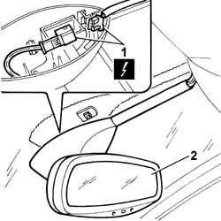
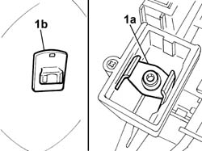

7065C68 REAR VIEW MIRROR - R+R
- Path
- Procedures > 70 FITTINGS > 7065 SAFETY BELTS AND ACCESSORIES > 7065C ACCESSORIES AND DECORATIONS > 7065C68 REAR VIEW MIRROR - R+R
- Kind
- repair procedure (removal / refitting; the operation number is the code)
- Applies to
- all engines; all production periods
- Interactive page
- https://sloeber94.github.io/elrnDB-fUlss/en/#/179007950
Applies to: all engines; all production periods
 Removing
Removing
 Refitting
RefittingOp. 5530B56 BATTERY DRIP TRAY COVER - R.R.
- Disconnect the negative battery terminal.
- Exerting pressure upwards, release the rear view mirror from the support on the windscreen.
1. Disconnect the electrical connection.
- Release the roof wiring from the fastenings.
2. Remove the rear view mirror.

Applies to: all engines; all production periods
Refitting
Removing- Position the roof wiring and secure it.
- Connect the electrical connection.
1. Position the mirror making sure that the guide (1a) coincides with the support on the windscreen (1b).
- Press downwards until the mirror can be heard fitting into the support.

Applies to: all engines; all production periods
- Connect the negative battery terminal.